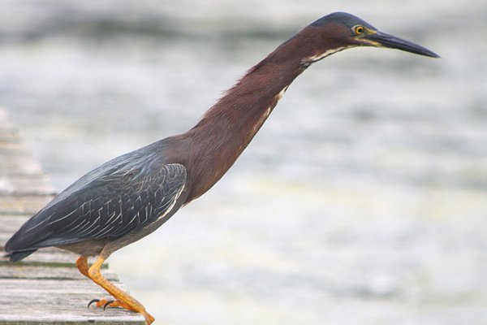

Latest Posts
Top Birding Moments

One of my top birding moments happened in Costa Rica: I watched this green heron wading through the water as the tide went out attempting to catch a fish. Herons have incredibly long necks, that they can fold up into their bodies. It’s hard to tell with this picture, because green herons have feathers that cover these folds, making it look like they actually have a short neck. However, when we saw this bird craning its neck to look for fish, it’s neck was almost a foot long! Below is a picture of a green heron with its neck fully extended.

Kayaking in Costa Rica

Some of the best birding I’ve ever done happened before I’d even started to consider myself a birder. It happened before I’d even bought a field guide or a pair of binoculars. I was in Costa Rica in December of 2019 for a family vacation, and we’d booked a kayaking tour through the mangroves. On this tour I saw several birds, and even got a lifer: a bare-throated tiger heron, which was especially exciting because we don’t have those in Canada. But the best moment of this tour by far was the moment when a great egret flew overhead, only about 10 feet above us. It was a perfect moment that took everyone’s breath away. That was one of the moments that inspired my passion for birding.